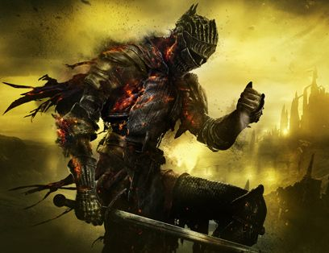

And so it is, that Ash seeketh Embers.
The bell tolls, and the lords rise, to take their throne. But what if they refuse to link the flame? The Unkindled will rise, and some may face the challenge. For Ash seeketh embers. You are unkindled, a being that tried, but failed to link the fire. You must try again. The Age of Fire is fading, and soon, only dark will remain. After gathering the lords as kindling, you must visit the Kiln of the First Flame. Can you defeat the Soul of Cinder? The embodiment of mightier souls whom had succeeded in linking the flame. And if you succeed, will you retain the cycle? Will you link the flame? Or forsake it? Or perhaps, something else? The Hollows of Londor seek a new Lord. And the guiding Firekeeper of Firelink Shrine is ever so gentle and helpful. You must decide your fate.
Go Back